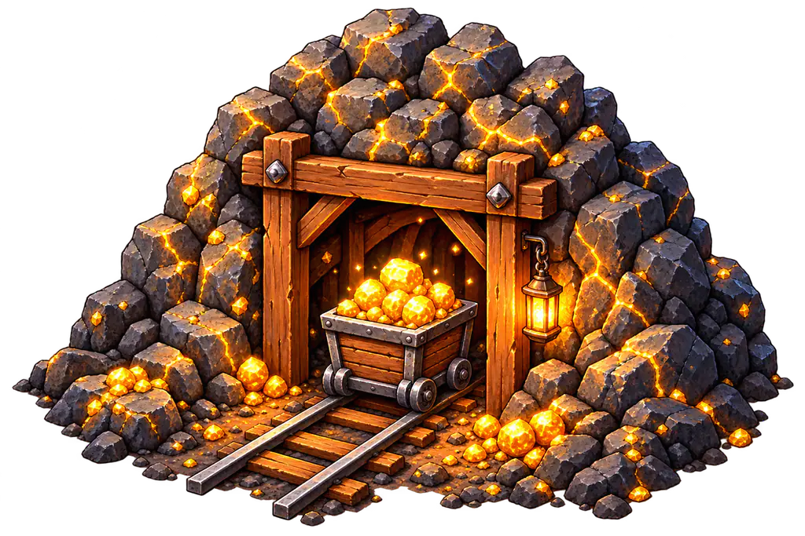
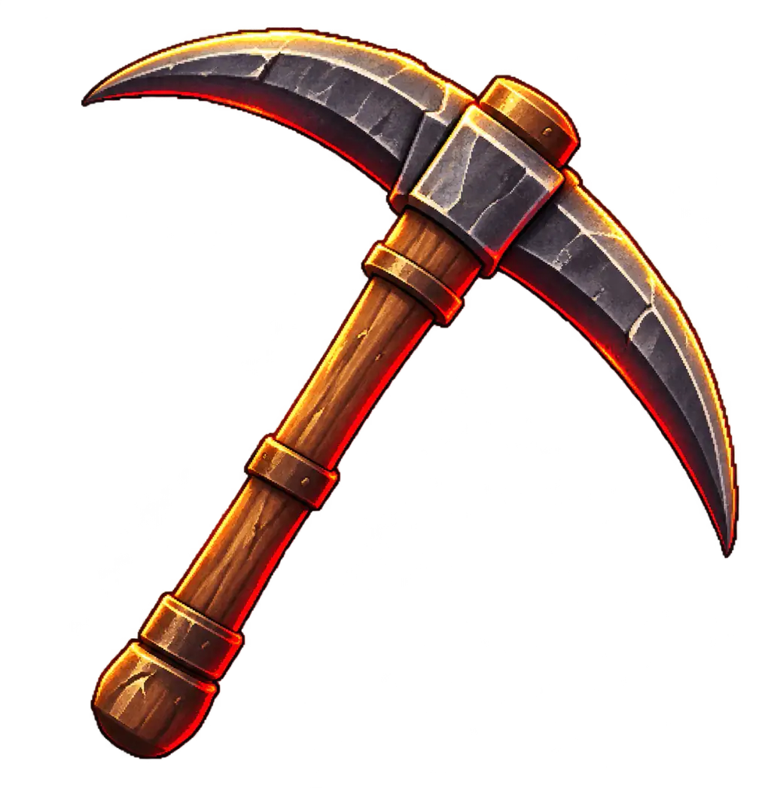
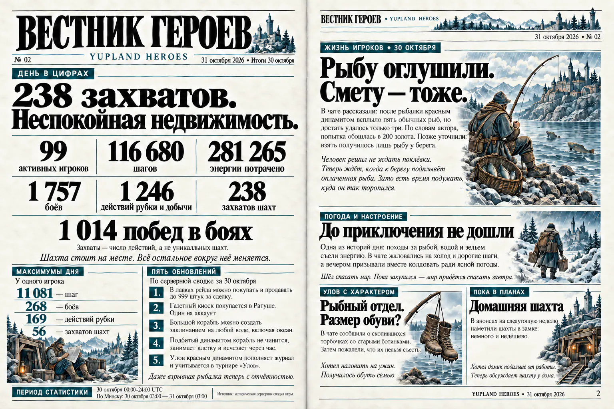

1
ВЫБЕРИ ГЕРОЯ
Выбери Юпика, Кабана или ДраКошку для первого рейда и начни свою историю.
02 / КАК ЭТО РАБОТАЕТ
Опасные земли, таинственные шахты и древние секреты. Твоё приключение начинается здесь.
Выбери Юпика, Кабана или ДраКошку для первого рейда и начни свою историю.

Открывай карту, исследуй новые места и ищи дорогу к следующему испытанию.

Спустись в шахту, собери находку и встреть стража на пути к выходу.
Загружаем рейд…
04 / ОГРОМНЫЙ МИР
За первым рейдом открывается большой мир: разные земли, герои со своими историями и замок, куда хочется возвращаться.
Открыть игру↗У каждого свой стиль и история.
Леса, долины, пещеры и новые места.

Дом и начало новых приключений.

05 / МИНИ-ИГРА
Короткая игра прямо в браузере. Помоги Юпику найти спрятанную под землёй находку.
06 / ВЕСТИ МИРА
Новости мира, истории героев и газетные выпуски. Читай «Вестник героев» и следи за событиями Юпленда.

OUR VISION
A future platform where approved creators build games, worlds and connected economies.
600+ players
100 daily active
Two mini-games.
One shared world.
Voice creation
for approved creators
1.57M+ NFT events on NEAR
10K+ holders yuplandshop NearBlocks